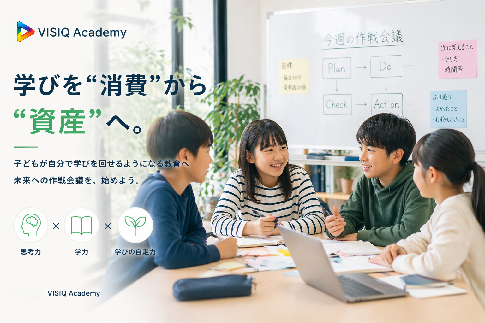

「勉強しなさい」と言い続けてしまう
声かけが親子のストレスになり、学習が前向きに進みにくい。

VISIQ Academyは、一般的な塾ではありません。教科を教えることだけを目的にせず、AIと対面コーチングを通して「学び方そのもの」を育てる教育プログラムです。対象は、小学生からです。
学びを“消費”から“資産”へ変える考え方と、VISIQ Academyの全体像を短くご紹介します。
保護者の方の「毎日のモヤモヤ」から、VISIQ Academyは設計されています。
声かけが親子のストレスになり、学習が前向きに進みにくい。
始めるまでに時間がかかり、習慣化が難しい。
「教わるだけ」で終わり、家で再現できない。
学習管理まで担うのは、忙しい日常では限界がある。
VISIQ Academyは一般的な塾ではありません。知識を渡す前に、学び方を育てる。答えを受け取る前に、自分で問いを立てる。人生を主体的に設計する土台を、小学生のうちから整えます。
知識の量よりも、学ぶ力そのものを育てる設計です。
問い・調べ・考え・振り返り・次の一歩を、自分で回せるようにします。
学力は結果。本質は、主体的に人生を選べる力を育てることです。
まずは無料体験会で、学び方が変わる入口かどうかをご確認ください。
教材不足の時代ではありません。いま不足しているのは、自走力です。
情報・教材・アプリは豊富でも、使いこなす力が育っていないケースが増えています。
足りないのは知識量より、学びを自分で回す技術です。
「教わるだけ」では変わりにくい領域に、いまの子どもたちは立っています。
VISIQが育てたいのは、偏差値の高い子ではなく「解像度の高い人」です。見えるものの先を捉える視点と、思考の質を掛け合わせ、世界の見え方をくっきりさせる力を育てます。
見えるものの、その先を捉える視点。
知識・理解・処理・思考の質。
世界の見え方がくっきりする力。
とくに小4前後は、学力の壁というより思考の壁が出やすい時期です。習慣・学び方・自己認識が固まりきる前だからこそ、土台を作り直せます。
土台が動かせる時期。学び方を変える余地が大きい。
修正コストが上がり、後追い対応になりやすい。
やり直しが難しくなり、選択肢が狭まりやすい。
VISIQの学習サイクルは、教室でPlanし、家庭でDoし、教室でCheck/Actionする設計です。
目標・優先順位・進め方を小グループで設計します。
家庭学習で実行。学習ログで過程を残し、次回に接続します。
実行内容を振り返り、言語化し、プレゼン共有で理解を深めます。
次の一歩を再設計し、継続可能な形へアップデートします。
授業を受ける場所ではなく、未来への作戦会議を行う場所です。
ただのPCスキルではなく、思考を外に出し客観視するための基礎技術です。
丸写しのためではなく、問いを整理し、別視点を得るためのパートナーとして使います。
書く速度と対話の質が上がることで、考える速度と深さが変わります。
誇張せず、学習設計の違いを整理しました。
体験参加では、この違いを実際の作戦会議で確認できます。
学習の変化が、家庭の日常の変化につながります。
VISIQ Academyは、段階的に自走力を育てる4フェーズ設計です。入口に位置づくCAMP（3か月体験プログラム）で、学び方の土台を整えます。
Phase 1: CAMP（3か月体験）
目的は成績を一気に上げることではなく、「学び方が変わる入口」をつくることです。
Phase 2: Advance
教科の先取りやPDCA運用を通じて、継続できる学習運用へ移行します。
Phase 3: Beyond
多面的思考・社会文脈・未来設計を扱い、判断の質を引き上げます。
Phase 4: Synergy
他者支援や協働を通して、学びを自分だけで終わらせない力を育てます。
詳しい料金・コース内容は資料でご確認いただけます。無料体験会でご家庭に合う進め方をご提案します。
ランクは競争のためではなく、成長段階を見える化するための仕組みです。比べるのは他人ではなく、昨日の自分です。
学習リズムを整え、取りかかりの習慣をつくる段階。
基礎を反復し、理解を自分の言葉で説明できる段階。
学んだことを問題解決に使い、考え方を広げる段階。
目標設定から振り返りまでを、サポートを受けながら自分で回せる段階。
学びが循環する場所をつくります。一人の工夫が別の誰かを育て、解像度の高い人材ネットワークへ育っていく。学びを将来の人的資産へ接続する土台を目指します。
VISIQは家庭の代替ではなく、家庭を支える第三者です。
子育ての正解を押し付ける場ではありません。
親のまなざしと第三者のまなざしをつなぎ、子どもを支えます。
学びの土台を家庭にもインストールできるよう支援します。
VISIQ Academyが重視するのは、点数そのものより「自分で学びを進める力」です。ここでは、実際に育ってきた力がどのように進路や日々の学びに結びついたかをご紹介します。
長女の事例
学習計画を自分で立て、振り返りを重ねる習慣を中高で継続し、現役・塾なしで一橋大学へ進学。
重要だったのは、結果の前に「問いを立てる」「やり方を見直す」「次の一手を決める」姿勢が日常化したことです。受け身ではなく、自分で学習を運転できる状態が、進路選択でも力を発揮しました。
長男の事例
教科の先取りだけでなく、ITツールを使って調べ、整理し、アウトプットする流れを自分で設計。
興味関心を起点に学びを深める過程で、学習は「やらされるもの」から「自分で広げるもの」へ変化しました。成績指標だけでは見えにくい、探究心と実行力の伸びが日々の行動に表れています。
※成果の形は一人ひとり異なりますが、VISIQ Academyはこうした「自分で学びを進める力」を育てることを目指しています。
学習習慣をつけたい子、受け身学習から抜け出したい子、考える力を育てたい子に向いています。
大丈夫です。現在地に合わせて段階設計し、つまずいた際の立て直しもコーチが伴走します。
主に言語化・振り返り・思考整理に活用します。正解を出すだけでなく、考え方を育てるための補助として使います。
毎日の細かい管理は不要です。必要な共有は教室側が行い、家庭の負担を減らす運用を重視しています。
1か月目で学び方の型を整え、2か月目で問いと振り返りを育て、3か月目で自分で回す感覚をつくります。
必要ありません。ご家庭でご検討いただき、納得いただけた場合のみ次のステップをご案内します。
無料体験会では、売り込みではなく「VISIQ Academyの考え方がお子さまに合うか」を確認することを重視します。
VISIQ Academyは、学びを“消費”から“資産”へ変える教育プログラムです。無料体験会で全体像を確認いただいた上で、必要に応じて3か月体験プログラムへ進めます。参加後の無理な勧誘は行いません。